Префектура Хоккайдо · Нисэко и озеро Сикоцу · путешествие на кемпере
На кемпере по Хоккайдо: черешня под Саппоро, костёр у горы Йотэй и ужин на берегу озера Сикоцу
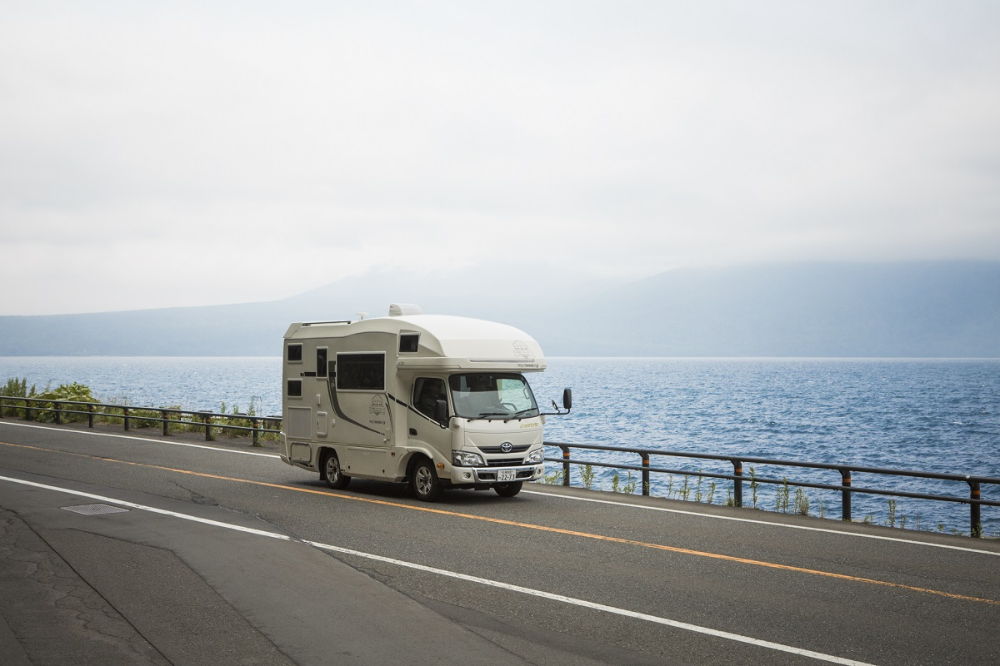
Кухня, холодильник и кровати в машине, которую можно водить с обычными правами. Летом 2019 года немецкий шеф Маркус Бос проехал на кемпере от Саппоро к горе Йотэй и озеру Сикоцу, покупая продукты у фермеров по пути и готовя ужин под открытым небом.
Кемпер
Дом, который едет с тобой
Кемпер это машина, внутри которой есть всё для жизни: кровать, кухня, иногда туалет. Ехать можно в любой момент и куда угодно, гостиницу бронировать не нужно, заселяться и выезжать к определённому часу тоже. Можно выехать в пятницу вечером сразу после работы и переночевать в машине по дороге: так не попадёшь в субботние пробки и получишь выходные целиком.
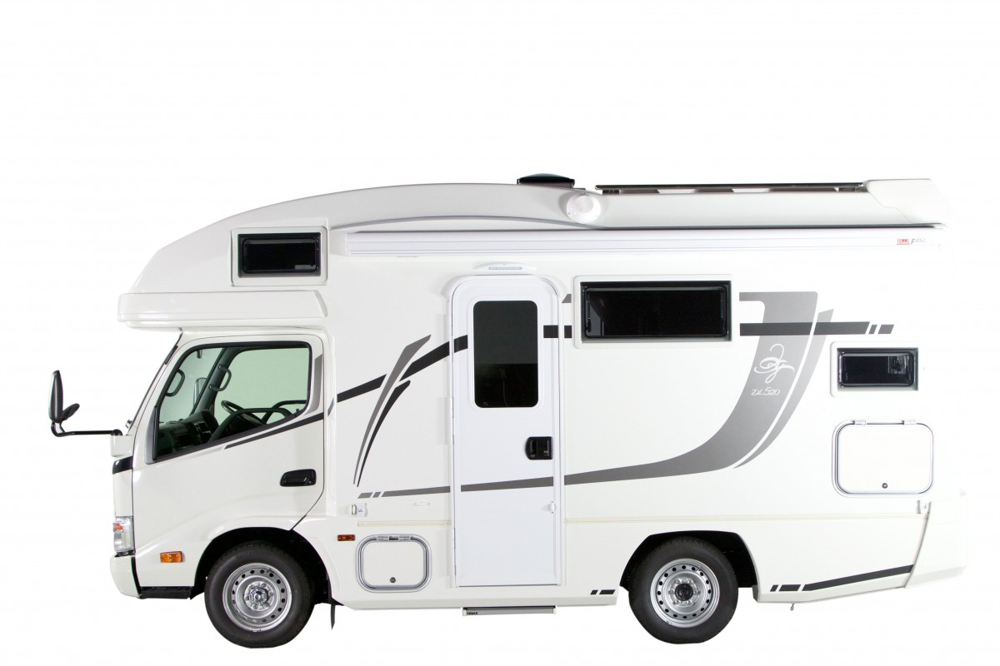
Главное удовольствие такой поездки это еда. В машине есть кухня, поэтому всё, что купил по дороге, можно сразу приготовить. Для этого лучше всего подходит Хоккайдо: кемпингов здесь много, а продуктов ещё больше. Летом и осенью придорожные станции завалены овощами и фруктами нового урожая, а кемпинги на выбор: в берёзовом лесу, на берегу озера. Места на них просторные, людей заметно меньше, чем в кемпингах вокруг Токио, и на многих площадках есть розетки для кемперов.
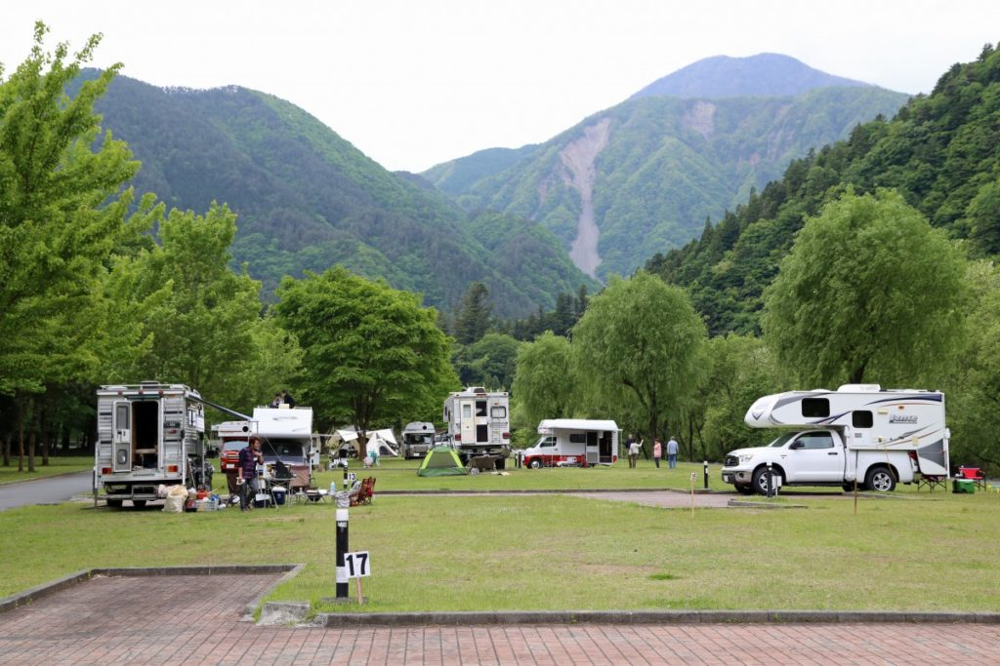
Шеф
Маркус Бос и лучший сезон
Проводником в этой поездке был Маркус Бос, немецкий шеф, который живёт в Саппоро.
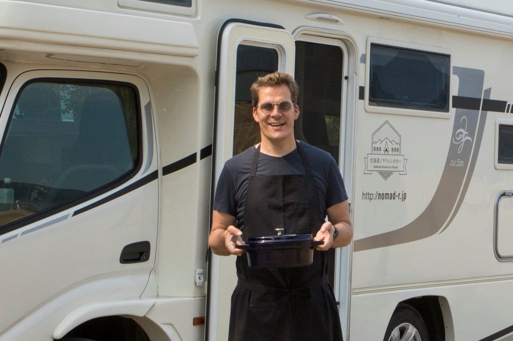
Ехать за едой на Хоккайдо, по его словам, лучше всего с июня по октябрь. Сначала идёт спаржа, за ней черешня, дыни, кукуруза, картофель: главные урожаи острова сменяют друг друга почти без перерыва. В эти месяцы Маркус вместе с окрестными фермерами устраивает в Саппоро рынок, знает овощи и фрукты Хоккайдо наперечёт и рассказывает покупателям, как их вкуснее приготовить.
Сад
Вишни на склоне к югу от Саппоро
Первая остановка, сад «Синохара», одно из самых любимых мест Маркуса. На огромном склоне к югу от Саппоро растут черешни, сливы и яблони, и до начала августа здесь можно есть красную черешню прямо с дерева, сколько захочется.
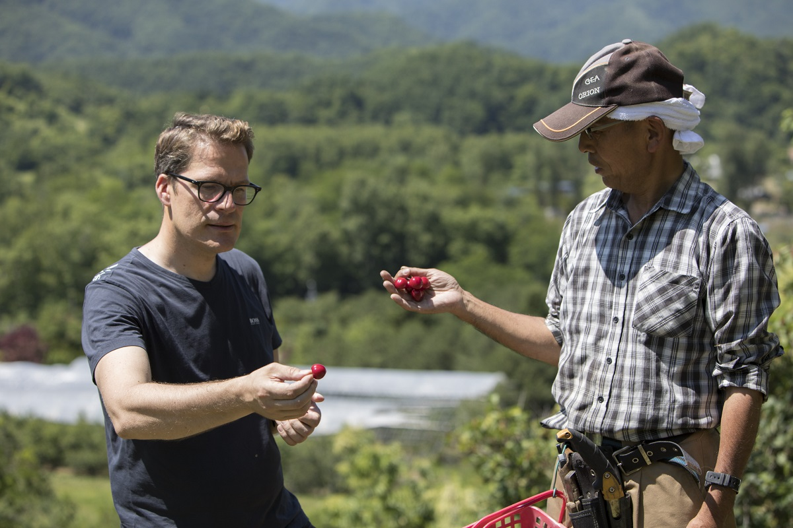
«Вот эта кислинка мне и нужна. Из неё получается отличное варенье, а если уварить черешню с бальзамиком в соус и подать к жареной свинине, будет лучше некуда»
Маркус Бос
Йотэй
Хлеб, родники и гора за спиной
Цель первого дня гора Йотэй, символ Хоккайдо. Мы подробно рассказывали о ней в статье о лете в Нисэко. Её вода, ветер и почва делают землю вокруг очень щедрой. На придорожных станциях Русуцу и Нисэко глаза разбегаются: блестящие свежие овощи, хлеб на собственной ржи и овощах, сыр из хорошего молока, местное вино.
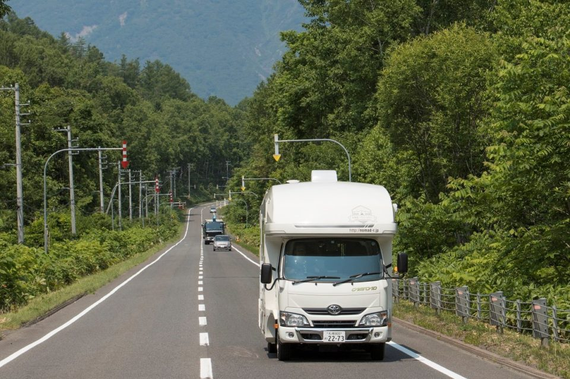
Прелесть поездки на кемпере в том, что можно целиком довериться месту, его пейзажам и еде, и спокойно ехать без плана. Купил свежий хлеб, остановился там, где красиво, сварил кофе на кухне в салоне и передохнул.
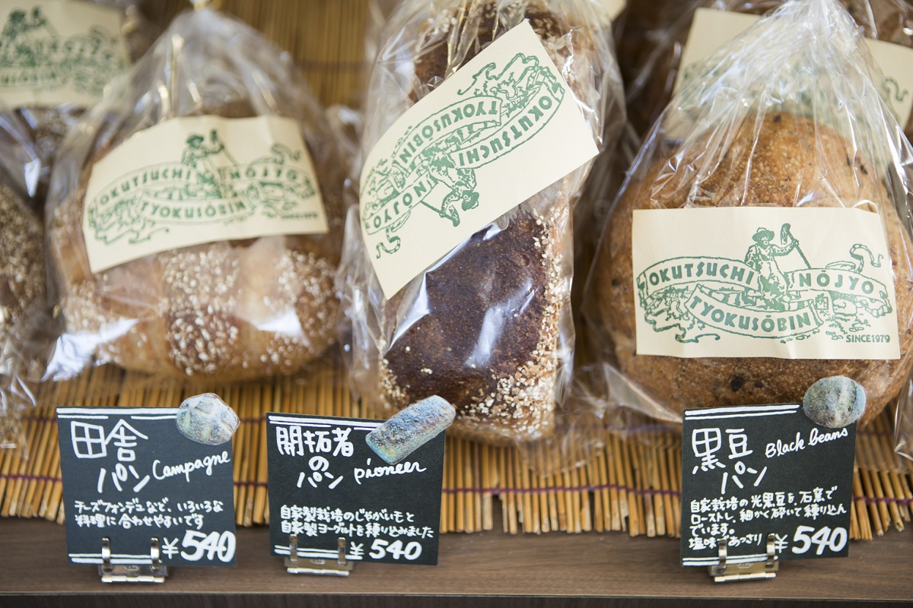
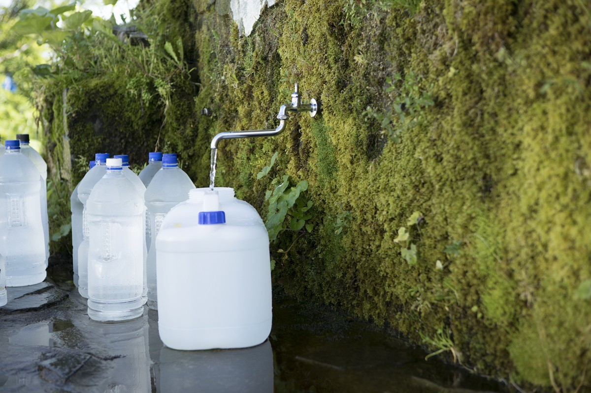
Вечером продукты, собранные по дороге, едят не спеша, с вином, а спать ложатся под звёздами в машине, не возясь с палаткой. Такой радости, по словам авторов маршрута, не даст поездка на арендованной машине с ночёвками в отелях. Если хочется остановиться не в машине, а в рёкане, у Нисэко есть рёкан Zaborin.
Костёр
Niseko Sahina Campground
Первую ночь провели в кемпинге Niseko Sahina Campground у подножия горы Йотэй. Отсюда прекрасно видны и сама гора, и хребет Нисэко. Площадки разделены пихтами, берёзами и мискантусом, поэтому соседей почти не видно. На каждом месте есть круг для костра, и разводить огонь можно прямо на земле. Хозяева кемпинга всерьёз занимаются агротуризмом и через Нисэко знакомят гостей со всем Хоккайдо.
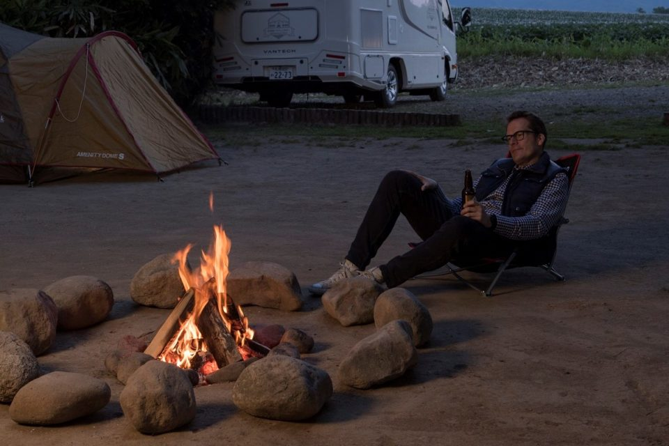
Сидеть у огня и смотреть, как садится солнце и небо меняет цвет, ни с чем не сравнимая роскошь. Готовить у костра, считает Маркус, нужно без лишних стараний. Сковороду-гриль ставят на огонь, а картофель, шиитаке, лук и кукурузу заворачивают в фольгу и долго пекут: получается настоящий пир.
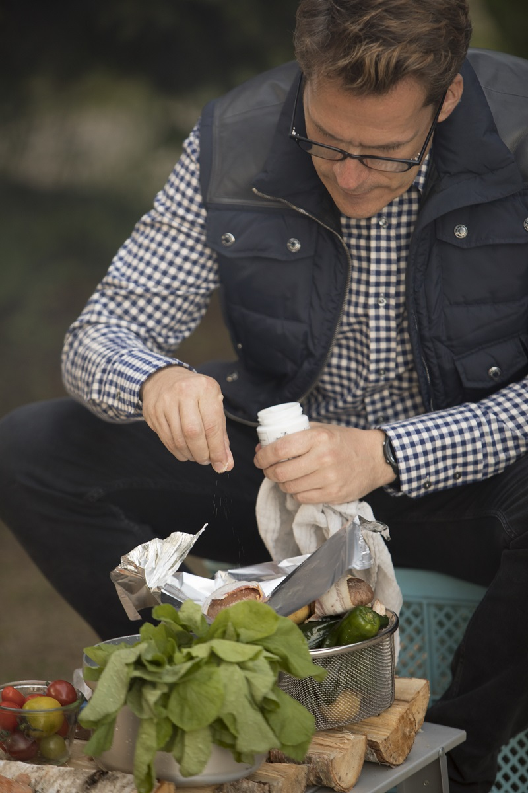
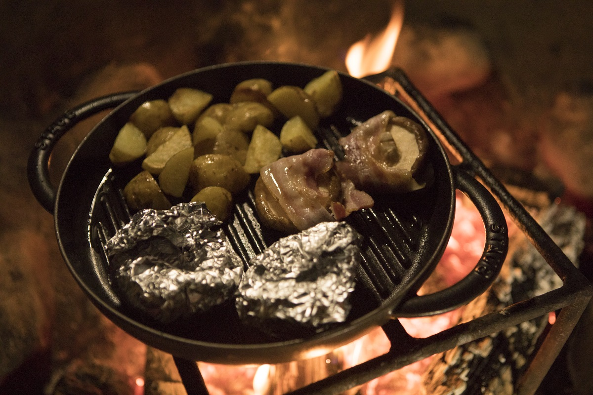
Странное дело: глядишь на неровное пламя, и разговор не кончается. Кровати в кемпере лучше разложить до того, как разжигаешь костёр, чтобы, когда сон всё же победит, сразу забраться под одеяло.
Летнее утро на Хоккайдо начинается рано. Просыпаешься от птиц, над картофельным полем туман, тянет влажной прохладой. На завтрак Маркус приготовил крестьянский омлет, который его отец каждое воскресенье жарил дома в Германии. Картофель заранее отваривают и режут вместе с кожурой ломтиками толщиной в сантиметр. Так же режут цуккини, сосиски и маринованные огурцы, всё обжаривают на сковороде, добавляют сыр и заливают яйцами, посоленными заранее. Главный секрет: сначала обжарить картофель до хруста с обеих сторон и только потом добавлять остальное. Картофельный омлет перед картофельным полем запоминается надолго.
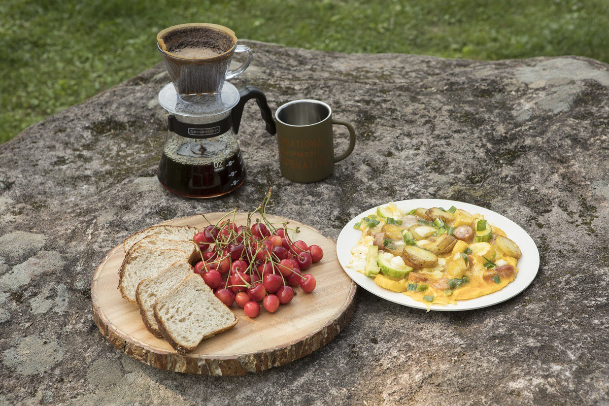
Niseko Sahina Campground
- Адрес
- префектура Хоккайдо, уезд Исоя, Ранкоси, Юсато, 224-19
- Телефон
- +81 136-58-3465
- Заезд / выезд
- заезд с 13:00, выезд до 11:00
- Цены / Вход
- 800 иен с человека за ночь
- Сайт
- sahina-camp.com
Сикоцу
Ужин на берегу самого прозрачного озера
Позавтракав в Нисэко, отправились к озеру Сикоцу, в кемпинг «Бифуэ» на его берегу. Сюда приезжают со всей Японии. В 2019 году ворота открывались в 7 утра, а места занимали в порядке очереди, поэтому сначала выбирали место с хорошим видом и только потом ехали в онсэн или за продуктами. С 2023 года кемпинг работает только по предварительной брони через официальный сайт.
По дороге от придорожной станции Энива заехали на томатную ферму «Фарм Гэн» и на винодельню Yamazaki Winery, закупили продукты на вечер и вернулись к озеру. Остаток дня можно просто отдыхать на берегу: на озере плавают на каноэ и ловят рыбу.
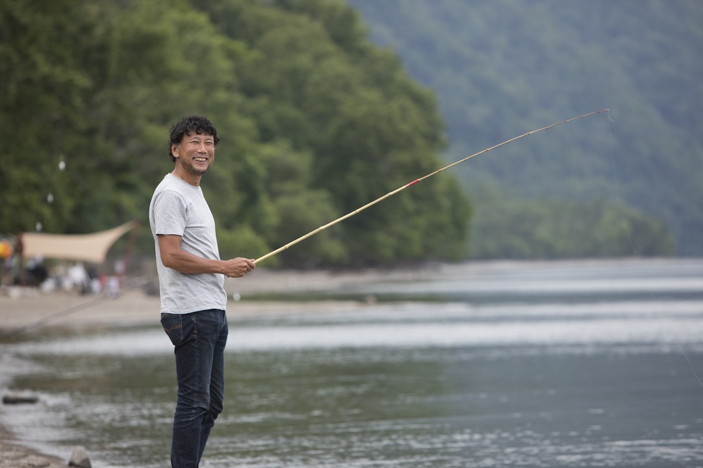
Перед закатом все вместе взялись за ужин: свинина из Русуцу и черешня, круглые цуккини и камамбер, брокколи и горгонзола, помидоры, огурцы и зелёный лук. Маркус сочетает купленное без остатка и быстро, а готовит предельно просто.
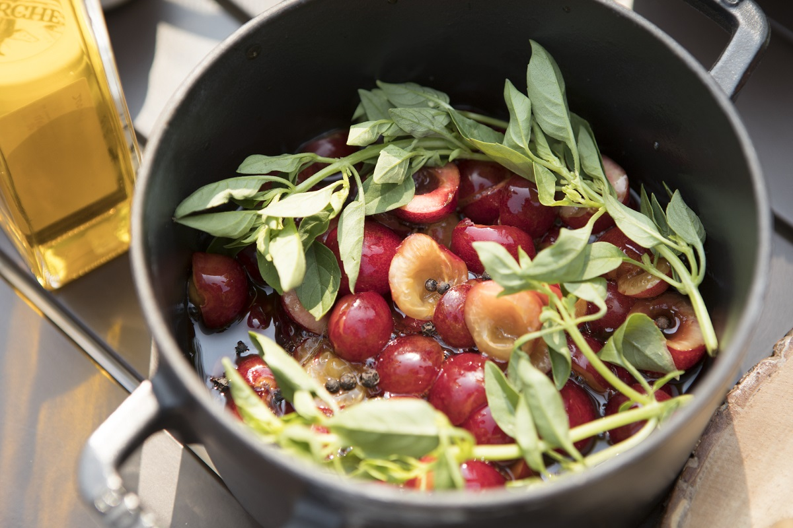
И здесь кухня в салоне выручала: в машине резали овощи и заранее их отваривали. Одни работали на кухне, другие у двухконфорочной плитки на улице, все шумно и весело делили дела, и стол на берегу озера после этого кажется особенно вкусным. Начали с тоста: яблочным вином, сидром, который заранее охладили в холодильнике. Шумный ужин затянулся надолго.
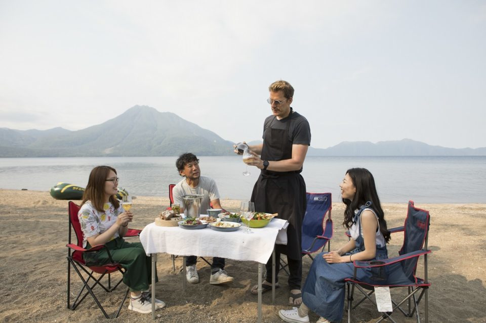
Вокруг Сикоцу стоит погулять: к озеру Окотанпэ и на вулкан Фуппуси-дакэ. Ущелье Кокэ-но домон с замшелыми стенами тоже рядом, но после ливней 2014 года проход в него закрыт из-за опасности обвалов.
Кемпер привлекает и сам по себе, как дом на колёсах. Но главное, что он делает простые часы с друзьями или семьёй незаменимыми. Когда-нибудь, вспоминая поездку, вы удивитесь, какие мелочи зацепились в памяти.
Кемпинг «Бифуэ» на озере Сикоцу
- Адрес
- префектура Хоккайдо, Титосэ, Бифуэ, берег озера Сикоцу
- Телефон
- +81 90-5987-1284
- Заезд / выезд
- ворота открываются в 7:00, выезд до 11:00
- Цены / Вход
- 1000 иен с человека за ночь
- Сайт
- shikotuko.jp
Ещё
Кемпинг, по которому ходит паровоз
На Хоккайдо есть и кемпинги, где хочется провести не одну ночь, а весь отпуск. «Икои-но мори» стоит в лесном парке среди высоких гор на северо-востоке острова. Это один из немногих кемпингов в Японии, по территории которого ходит настоящий паровоз. Для детей есть большие игровые площадки, картинг и роликовые коньки. Можно выбрать свободное место в лесу или отдельную площадку на газоне.
Автокемпинг «Икои-но мори»
- Адрес
- префектура Хоккайдо, уезд Момбэцу, Энгару, Марусэппу-Камимури, 80
- Телефон
- +81 158-47-2213 (отдел промышленности района Марусэппу, 8:45–17:30), в субботу, воскресенье и праздники +81 158-47-2466 (краеведческий музей, 8:45–17:00)
- Даты
- в 2019 году сезон длился до 20 октября
- Заезд / выезд
- заезд 13:00–17:00, выезд до 11:00
- Цены / Вход
- вход 500 иен для взрослых (от старшеклассников), 300 иен для школьников; площадка с электричеством 2500 иен за ночь, без электричества 2000 иен, свободное место 500 иен
- Как добраться
- около 15 минут на машине от съезда Марусэппу скоростной дороги Асахикава–Момбэцу или от станции Марусэппу
Фото: Ёсихито Одзава, Vantech.